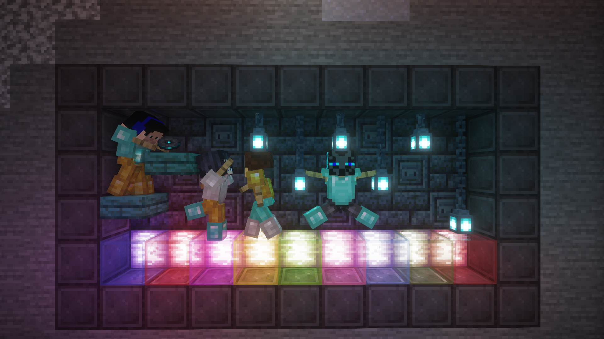
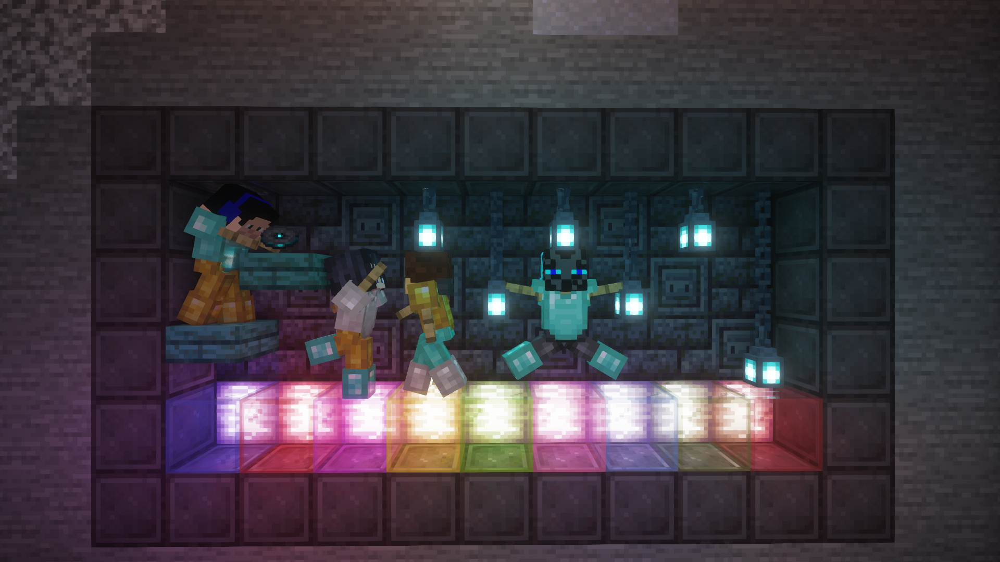

Unusual survival 1
O serveru
Úvod
Unusual survival je minecraftový server, který jsem já a moji přátelé vytvořili v našà "minecraft phase".
Je to taková oslazená vanilla, myšleno tak, že je tu sice přidaný nějaký kontent,
ale overall je to furt jenom vanilla s nějakýma novýma strukturama a tak.
Když jsme server zakládali, nemohli jsme se dohodnout, jestli ho udělat spÃÅ¡e jako smp nebo klasický peaceful survival, tak jsme přisli se systémem,
ve kterém se každý hráč může rozhodnout jakým způsobem bude hrát.
VÃce podrobnějÅ¡Ãch informacà se můžeš dozvědět v odstavcÃch nÞe, které popisujà konkrétnà témata.
Informace
Server byl spuštěn na verzi 1.20.1
Server běžà v modovacÃm rozhranà Forge
Server je hostován na platformě Exaroton
Seed serveru je: 4472206987432981957
Pravidla
Obecné:
- Stavěnà na spawnu musà dovolit @Drápkoun
- Na spawnu se nesmà zabÃjet (ani hostile hráči)
- Jakékoli škody způsobeny na spawnu musÃÅ¡ opravit, pokud nemůžeš řekni to @Smertッ nebo @Drápkoun
- Spawn je urÄen k tomu, aby si tam každý hráč mohl postavit svůj obchod, předem se ale vždy domluvte s @Drápkoun.
- NeniÄit ani nelootit vesnici na spawnu (prostě ji nechat zachovanou v původnÃm stavu)
- Každý hráč si musà vybrat roli a Å™Ãdit se podle jejÃch pravidel (roli si může každý kdykoli změnit)
Peaceful:
- Chovej se slušně, nikomu nenadávej a nebuÄ toxic.
- Nikomu nic neniÄ a nelooti.
- Nikoho nezabÃjej pokud ti to nedovolÃ.
- Jakékoli škody na cizÃm majetku oznam majiteli majetku.
Hostile:
- Ostatnà hostile hráče můžeš zabÃjet, lootit a niÄit jim stavby.
- K peaceful hráčům se chovej podle jejich pravidel.
Bonus content
Módy:
Tree harvester
Umožňuje hráčům rychle těžit stromy. Pomocà drženà shiftu při kácenà stromu se stěžà celý strom najednou a listy opadajà rychleji.
Anti X-ray
Tento mód je tu od toho, aby zabránil hráčům použÃvat X-ray. Pokud se ti někdy stane, že všude kolem sebe uvidÃÅ¡ oreÄka,
je to způsobeno tÃmto módem a tÃm že hosting nestÃhá, po chvÃli by se všechno mělo vrátit do normálu.
Datapacky:
Vanilla structure update
Jak je poznat už podle názvu, tento datapack vylepšuje defaultnà vanilla struktury a přidává i pár nových,
jimiž jsou Cherry Grove Village a Swamp Village. Datapack nijak neupravuje generaci struktur,
takže na chunkbase se dá všechno stále normálně najÃt.
Doufám, že se tento datapack všem lÃbà stejně jako mně, protože podle mě je to jeden z nejlepÅ¡Ãch datapacků co jsem kdy viděl.
Vanilla tweaks
Datapacků z Vanilla tweaks je tu samozřejmě vÃce, takže sem dám seznam.
- afk display - jméno hráče v tabu zšedne, když je afk.
- anti enderman grief - zabraňuje endermanům krást bloky.
- Armor Statues - armor standy majà nynà většà možnosti konfigurace.
- Coordinates HUD - po zadánà commandu zobrazuje souřadnice hráče na obrazovce.
- Custom Nether Portals - umožňuje hráčům vytvářet portály do netheru v různých nestandartnÃch tvarech.
- Fast Leaf Decay - zrychluje proces rozpadánà listů po pokácenà stromu.
- More Mob Heads - přidává hlavy asi všech mobů, šance na drop nenà 100%.
- Multiplayer Sleep - staÄà aby spal jeden hráč.
- Player Head Drops - hráči nynà dropujà jejich hlavy po smrti.
- Unlock All Recipes - odemyká všechny recepty v crafting menu.
- Villager Workstation Highlights - po zadánà commandu zvýrazňuje pracovnà stanice vesniÄanů.
- XP Management - umožňuje hráčům po kliknutà na enchant table uschovávat xp v lahviÄkách, xp se dajà vybrat při vypeÄenà lahviÄek v peci.
Členové:
- Drapkoun
- dust_rlzz
- Emerald1312
- esjfds
- Jozka22
- Ondrys097
- Pavlos28
- PetrikD
- PetrPetru178
- PTEK_
- Trilongg
Stavby
ZatÃm tu nic nenà XDD
 
